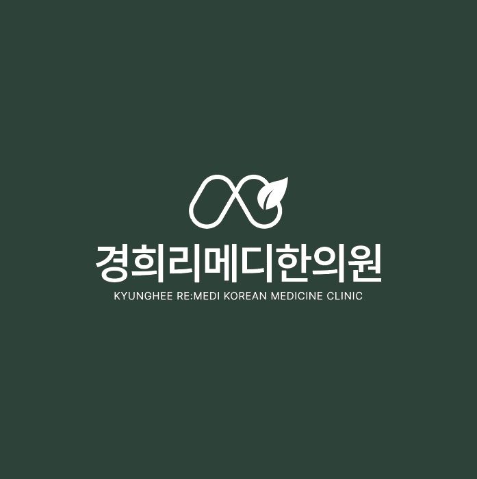

교통사고후유증
사고 이후 남는 목, 허리, 어깨 불편감을 확인합니다.
Pain & Traffic Accident
급만성통증, 자동차사고 후유증, 목·허리·어깨 긴장과 불편감을 현재 상태와 사고 경과에 맞춰 살핍니다.

Pain Care
자동차사고 이후 목, 허리, 어깨에 남는 불편감과 오래 반복된 급만성통증은 경과와 악화 요인을 함께 정리해야 합니다.
사고 이후 남는 목, 허리, 어깨 불편감을 확인합니다.
통증 위치, 기간, 반복 패턴과 악화 요인을 정리합니다.
진료와 생활 관리가 이어질 수 있도록 내원 계획을 안내합니다.